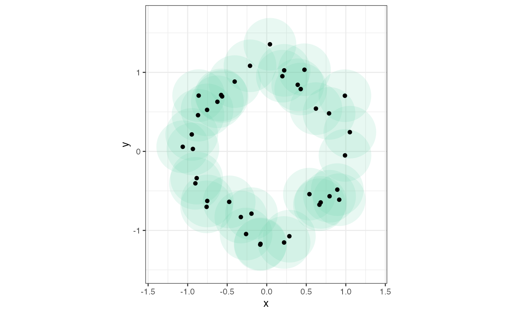
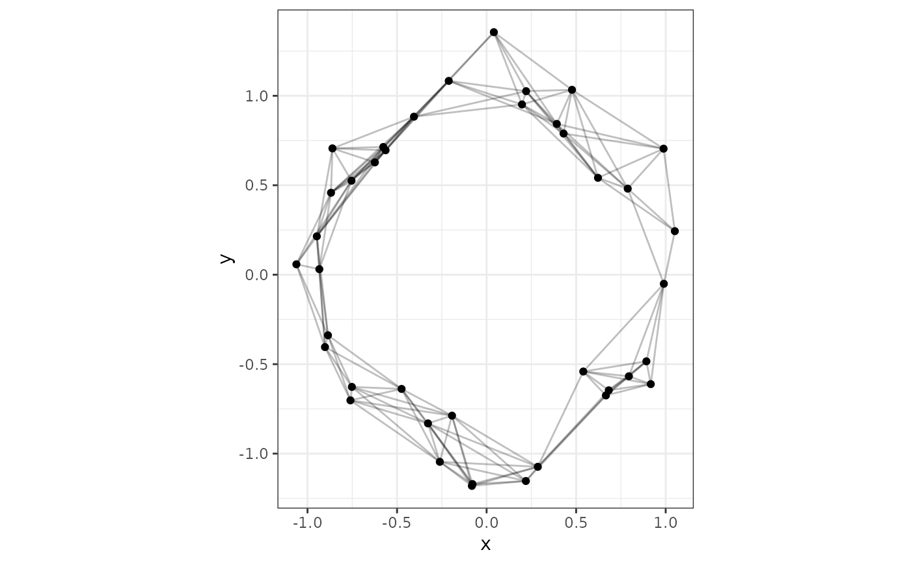
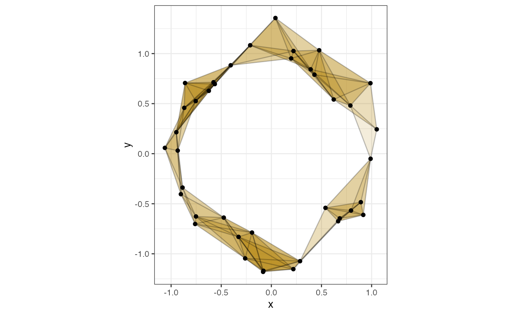
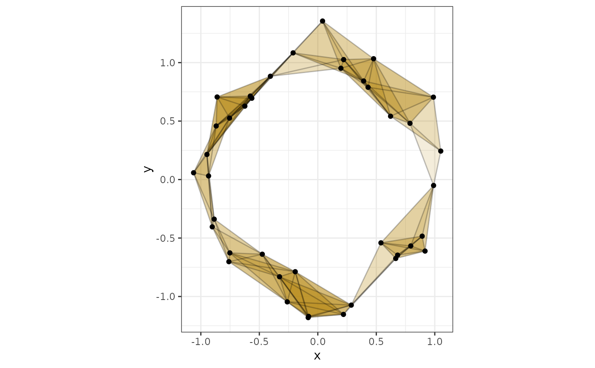
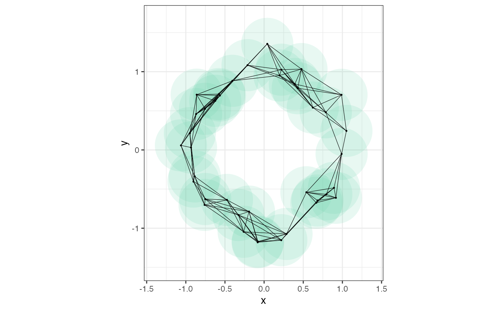
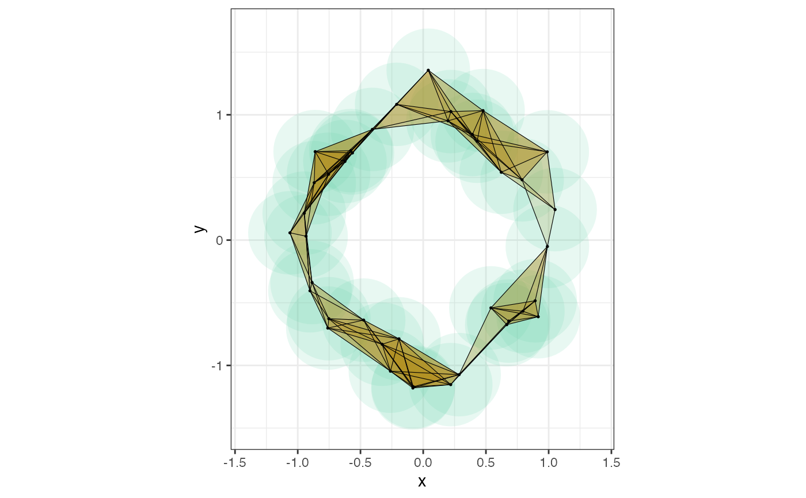
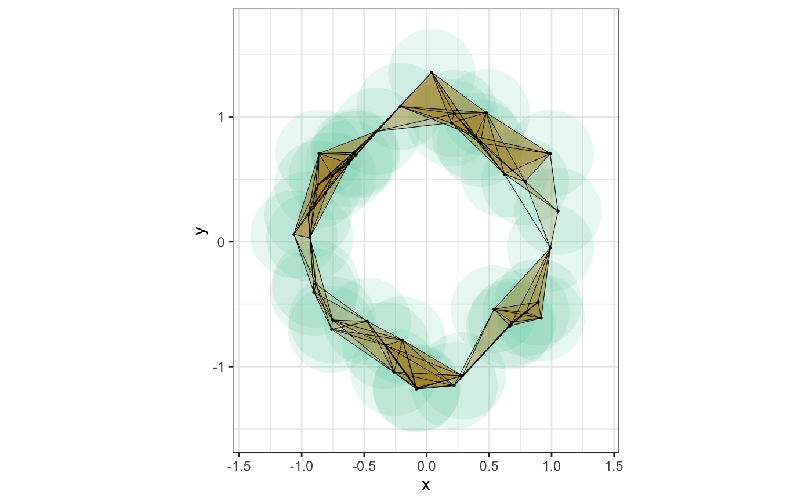

R/simplicial-complex.R
simplicial-complex.RdAnnotate 2-dimensional point clouds with TDA constructions.
stat_disk( mapping = NULL, data = NULL, geom = "face", position = "identity", na.rm = FALSE, radius = NULL, diameter = NULL, segments = 60, show.legend = NA, inherit.aes = TRUE, ... ) stat_vietoris0( mapping = NULL, data = NULL, geom = "point", position = "identity", na.rm = FALSE, show.legend = NA, inherit.aes = TRUE, ... ) stat_vietoris1( mapping = NULL, data = NULL, geom = "segment", position = "identity", na.rm = FALSE, radius = NULL, diameter = NULL, show.legend = NA, inherit.aes = TRUE, ... ) stat_vietoris2( mapping = NULL, data = NULL, geom = "face", position = "identity", na.rm = FALSE, radius = NULL, diameter = NULL, show.legend = NA, inherit.aes = TRUE, ... ) stat_cech0( mapping = NULL, data = NULL, geom = "point", position = "identity", na.rm = FALSE, show.legend = NA, inherit.aes = TRUE, ... ) stat_cech1( mapping = NULL, data = NULL, geom = "segment", position = "identity", na.rm = FALSE, radius = NULL, diameter = NULL, show.legend = NA, inherit.aes = TRUE, ... ) stat_cech2( mapping = NULL, data = NULL, geom = "face", position = "identity", na.rm = FALSE, radius = NULL, diameter = NULL, show.legend = NA, inherit.aes = TRUE, ... ) geom_face( mapping = NULL, data = NULL, stat = "identity", position = "identity", na.rm = FALSE, show.legend = NA, inherit.aes = TRUE, ... )
| mapping | Set of aesthetic mappings created by |
|---|---|
| data | The data to be displayed in this layer. There are three options: If A A |
| geom | The geometric object to use display the data; defaults to
|
| position | Position adjustment, either as a string, or the result of a call to a position adjustment function. |
| na.rm | Logical; ignored. |
| radius | A positive number; the radius of the disk to render around each point or to determine simplices from a point cloud. |
| diameter | A positive number; the diameter of the disk to render around each point or to determine simplices from a point cloud. |
| segments | The number of segments to be used in drawing each disk. |
| show.legend | logical. Should this layer be included in the legends?
|
| inherit.aes | If |
| ... | Additional arguments passed to |
| stat | The statistical transformation to use on the data for this layer, as a string. |
These plot layers are useful for exposition and education; they illustrate constructions used by TDA methods but cannot be pipelined into those methods.
A ball of radius \(r\) around a point \(x\) in Euclidean space consists of all points whose distances from \(x\) are less than \(r\).
The Vietoris complex of a point cloud is a simplicial complex consisting of a simplex for each subset of points within a fixed diameter of each other. The Čech complex consists of a simplex for each subset that lies within a circle of fixed diameter. (This means that the Čech complex depends on the geometry of the ambient space containing the point cloud, while the Vietoris complex depends only on the inter-point distances.)
The 0-skeleton of a complex consists of its vertices (0-simplices), the 1-skeleton additionally the edges between pairs of vertices (1-simplices), and the 2-skeleton additionally faces among triples of vertices (2-simplices).
geom_face() is a convenience geom that is equivalent to geom_polygon()
except that its default aesthetics are more appropriate for the overlapping
elements produced by the stat layers.
Given x and y coordinates, stat_vietoris1() encodes the edges of the
Vietoris complex using x, y, xend, and yend for geom_segment(), and
stat_vietoris2() encodes the faces using x, y, and group for
geom_polygon(). The edges of a Čech complex are exactly those of the
Vietoris complex, so stat_cech1() is an alias for stat_vietoris1(), while
stat_cech2() encodes the faces of the Čech complex in the same way as
stat_vietoris2() those of the Vietoris complex. Note that these stat layers
encode only the simplices of fixed dimension; to render the 1- or 2-skeleton,
they can be combined with geom_vietoris0() or geom_cech0(), which are
aliases for ggplot2::stat_identity() that default to
ggplot2::geom_point().
F Chazal and B Michel (2017) An introduction to Topological Data Analysis: fundamental and practical aspects for data scientists. https://arxiv.org/abs/1710.04019
ggplot2::layer() for additional arguments.
library("ggplot2") # function to generate noisy 2D circles make_noisy_circle <- function(n, sd = .01) { theta <- stats::runif(n = n, min = 0, max = 2*pi) cbind(x = cos(theta) + stats::rnorm(n, 0, sd), y = sin(theta) + stats::rnorm(n, 0, sd)) } # generate a noisy 2D circle set.seed(1) d <- as.data.frame(make_noisy_circle(n = 40, sd = .15)) # plot balls beneath points ggplot(d, aes(x = x, y = y)) + theme_bw() + coord_fixed() + stat_disk(radius = .35, fill = "aquamarine3") + geom_point()# plot Vietoris 1-skeleton ggplot(d, aes(x = x, y = y)) + theme_bw() + coord_fixed() + stat_vietoris1(diameter = .7, alpha = .25) + stat_vietoris0()# plot Vietoris 2-skeleton ggplot(d, aes(x = x, y = y)) + theme_bw() + coord_fixed() + stat_vietoris2(diameter = .7, fill = "darkgoldenrod") + stat_vietoris1(diameter = .7, alpha = .25) + stat_vietoris0()# plot Čech 2-skeleton ggplot(d, aes(x = x, y = y)) + theme_bw() + coord_fixed() + stat_cech2(diameter = .7, fill = "darkgoldenrod") + stat_cech1(diameter = .7, alpha = .25) + stat_cech0()# plot Vietoris 1-skeleton atop balls ggplot(d, aes(x = x, y = y)) + theme_bw() + coord_fixed() + stat_disk(radius = .35, fill = "aquamarine3") + stat_vietoris1(diameter = .7, size = .2) + stat_vietoris0(size = .3)# plot Vietoris 2-skeleton atop balls ggplot(d, aes(x = x, y = y)) + theme_bw() + coord_fixed() + stat_disk(radius = .35, fill = "aquamarine3") + stat_vietoris2(diameter = .7, fill = "darkgoldenrod") + stat_vietoris1(diameter = .7, size = .2) + stat_vietoris0(size = .3)# plot Čech 2-skeleton atop balls ggplot(d, aes(x = x, y = y)) + theme_bw() + coord_fixed() + stat_disk(radius = .35, fill = "aquamarine3") + stat_cech2(diameter = .7, fill = "darkgoldenrod") + stat_cech1(diameter = .7, size = .2) + stat_cech0(size = .3)